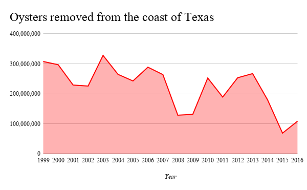

2018
Start collecting oyster shells from restaurants and stockpile them on a ranch.
Send Oysters Home initiative is to pick up oyster shells at participating restaurants and return them to our coast to save our sea life
Data provided by Lance Robinson From Texas Parks And Wildlife
The oysters harvested from Texas Estuaries has a total annual impact of over $35 million here in Texas. Oysters enhance water quality, stabilizing shorelines, and providing habitat for dolphins, crab, red drum, and fish.
Currently Austin restaurants are throwing oyster shells that could be going back into the ocean and would equate to 7 acres of oyster reef alone helping prevent flooding.
One acre of oyster reef provides habitat for 1.5 tons of fish and seafood.
One oyster filters 50 gallons of water per day.
Start collecting oyster shells from restaurants and stockpile them on a ranch.
We will have collected enough oyster shells to start the curing process this requires leaving the oyster shells outside for 6 months
Texas Park and Wildlife will pickup the oyster shells and take them back to the coast
support@sendoystershome.org